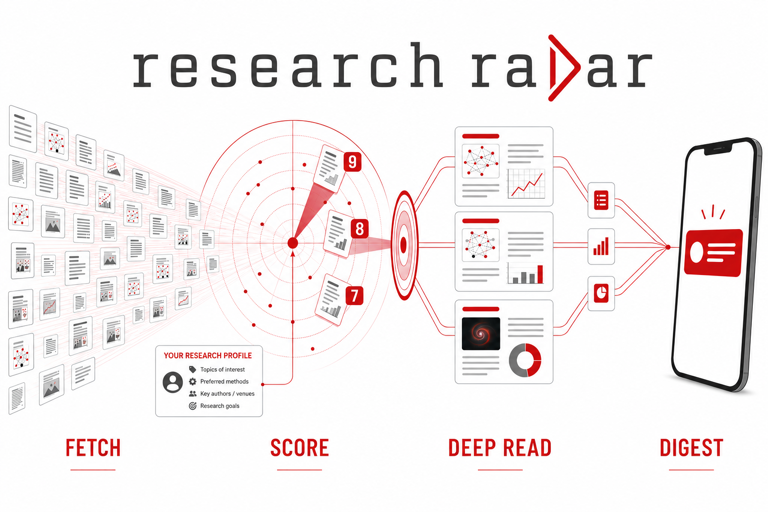

|
Ramazan Fazylov
Hi! I'm a second-year PhD student at MBZUAI under the supervision of Prof. Ivan Laptev.
I'm also being co-advised by Stamatis Lefkimmiatis, and previously I was also advised by Sergey Zagoruyko.
|

ResearchBelow you can see some of my recent works on dynamic generative 3D human avatars. |
|
One Basis to Animate Them All: Gaussian Blendshape Distillation for Real-Time Avatars
Ramazan Fazylov, Stamatis Lefkimmiatis, Ivan Laptev arXiv preprint, 2026 project page / arXiv / code We found that the costly neural networks for avatar animation can be expressed as a simple linear combination of blendshapes. This basis can be distilled from any Gaussian avatar generator, and a single basis is enough for any identity. |
|
|
|
AGORA: Adversarial Generation Of Real-time Animatable 3D Gaussian Head Avatars
Ramazan Fazylov, Sergey Zagoruyko, Aleksandr Parkin, Stamatis Lefkimmiatis, Ivan Laptev In Proceedings of the European Conference on Computer Vision Workshops (ECCVW), Interactive Social Avatars (ISA) Workshop, 2026 project page / arXiv / code Can we learn to generate animatable 3D head avatars using only 2D images for training? |
Notes
Why is the relativistic GAN loss better?
|
Other projects |
|
 |
Research Radar
Daily arXiv digest that scores new papers against your research interests and deep-reads the best ones. Runs on your existing Claude or ChatGPT subscription, or fully local on an open-source model. code / reddit post |
|
Design based on Jon Barron's website. |